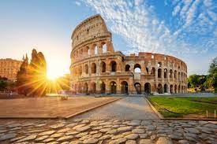
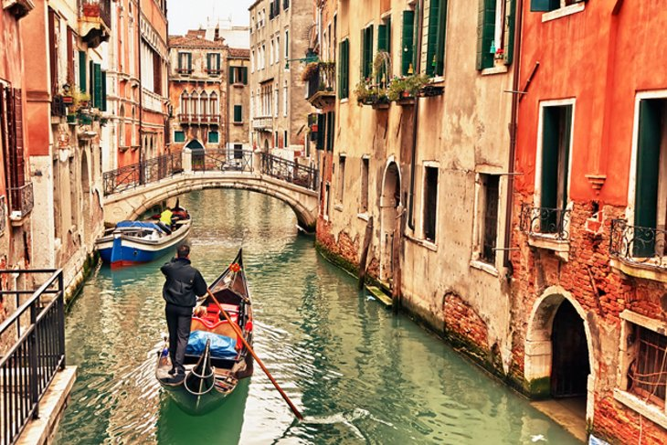

Country of Italia

Colosseum
This huge amphitheater, the largest of its kind ever built by the Roman Empire and the largest of their constructions to survive, remained a model for sports facilities right up to modern times. Built by Vespasian in 72 CE and enlarged by the addition of a fourth story by his son, Titus, it was a venue for public spectacles and shows - even mock sea battles.
A wooden floor that was 83 by 48 meters covered two additional underground stories with tunnels, rooms, cells, and passages that provided space for gladiators, workers, wild animals, and storage.
Today, the structure stands in stark contrast to the modern development that surrounds it and is a prominent reminder of ancient times and the extensive history of Rome.

The Grand Canal in Venice
A gondola ride through the canals of Venice is a tradition that travelers have been enjoying for centuries. Venice is a city of islands, and the canals have long been the city's main streets, connected by a labyrinth of narrow passageways.
The Grand Canal is the largest and most famous of these waterways, cutting a wide S-shaped route through the city. Along its sides are the grandest of the palaces once owned by the wealthiest and most powerful families of the Venetian Republic. The best way to see many of the grand palaces, whose fronts face the water, is from a Vaporetto ride along the Grand Canal.
Be sure your gondola ride - and your sightseeing explorations on foot - include some of the more atmospheric smaller canals, lined by old buildings that have remained relatively unchanged for hundreds of years.

Leaning Tower of Pisa
The Leaning Tower of Pisa (La Torre Pendente) is just one of many attractions in the city of Pisa, one whose world fame comes not from the considerable elegance of its design, but from a flaw. Work began on the tower in the 1100s, and the sinking, which led to the lean, began by the time the tower reached the third story.
Leaning more and more over the centuries, before restoration work in the 1990s, it was predicted to topple over by the year 2000. Today, visitors can climb up the stairs of the tower for a fabulous view over the city.
The Leaning Tower stands on the Piazza dei Miracoli, a setting it shares with the beautiful Romanesque Cathedral of Santa Maria Assunta and a round freestanding baptistery. Each of these features outstanding works of medieval stone carving.